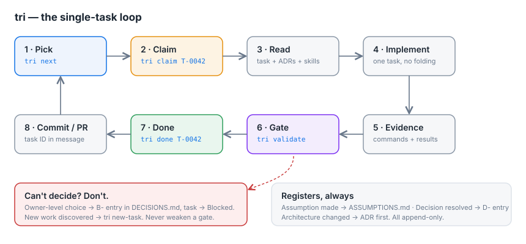
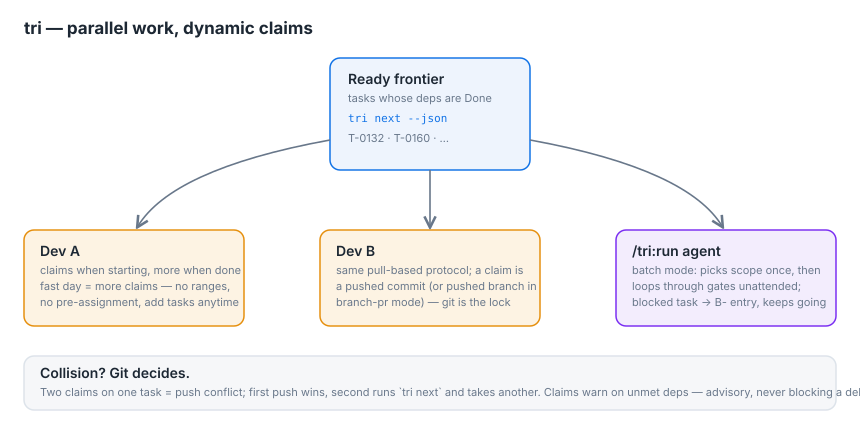

How to use tri
Task register · decision registers · evidence-gated done. State is markdown in git — no server, no daemon, one zero-dependency script.
Install (once per developer)
git clone git@github.com:Amerkhorsheed/tri.git ~/.tri
claude plugin marketplace add Amerkhorsheed/tri
claude plugin install tri@triCodex and other agents need no install — the project's AGENTS.md section (written by /tri:init) binds them to the same loop via node ~/.tri/scripts/tri.mjs.
New project: /tri:init standard · Existing task tree: write a tri.config.json adapter — files stay byte-for-byte unchanged.
The single-task loop

The two rules that make it work: never choose silently (owner-level choices become B- register entries, not inline defaults) and done means evidenced (tri done mechanically refuses an empty Evidence section, and tri validate is the merge gate).
Parallel developers & agents

No pre-assigned ranges. Claim when you start. Every claim writes a committed .tri/claims/<task-id>.json scope manifest naming owner, primary/covered/may-cover tasks, responsibilities, and related ADRs. TRI refuses exact scope overlap, fails closed on malformed scope, and never infers ownership from branch names. In branch-pr workflow the pushed task branch plus verified manifest ref is the visible lock; command workflows verify remote refs after pushes, stop on failure, and ask explicitly before opening or merging a PR against the development base.
The whole pipeline — /tri:ship
One command from "I want to work on X" to built code, in four stages:
- Preflight — dirty worktree, mid-rebase, detached HEAD, stale ref, and already-claimed tasks all stop or redirect the work; then it cuts the run branch so nothing lands on your default branch.
- Scope — resolves your area against the real task tree, with counts and blockers.
- Interview — reads every task and its ADRs, then asks only what is genuinely yours to decide, as selectable options.
- Specify — writes answers into task files, decision and assumption registers, and ADRs. Commits specifications on their own.
- Implement — hands off to the run loop and goes unattended.
One gate, between 3 and 4, and it is deliberate. Specifications land reviewable before any code exists: a wrong answer caught there costs seconds, the same answer caught after a batch run costs the batch. Everything before the gate asks you things; nothing after it does.
Batch execution — /tri:run
- Run surveys the frontier and offers real scopes: until-blocked · one phase · N tasks · named tasks; then sequential vs parallel subagents.
- Loops the single-task loop with no questions between tasks. State is recorded through
run-stateafter every task, so a killed session resumes exactly where it stopped. - A task needing an owner decision gets its B- entry, goes Blocked, and the run continues with other runnable work; questions batch to the end.
- Halts only on: red gate after a real fix attempt, or nothing runnable left.
- Sequential run = one run branch, atomic commit per task, one PR per phase boundary. Parallel = per-task branches/PRs.
Commands
| Command | Use |
|---|---|
/tri:go [focus] | Start here. Say what you want to work on; tri reads state, picks the right command below, runs it |
/tri:ship <area> | Whole pipeline: scope → interview → write specs → one go-ahead → implement unattended |
/tri:next | See ready tasks; claim and start one |
/tri:run | Autonomous batch through the gates |
/tri:done | Evidence-gated completion + PR |
/tri:plan | Spec → tasks with real dependency edges |
/tri:status · /tri:visualize | Counts, claims, critical path · interactive HTML board |
/tri:clarify | Interrogate and refine what is unclear — batched for specs, one at a time for decisions. Answers land in files, not chat |
/tri:adr | Record an architecture decision, then re-specify what it unblocks |
/tri:sync · /tri:validate --remote | Fetch remote branches, reserve identifiers, and fail CI on cross-branch collisions |
/tri:evidence | Capture command result with structured runtime execution context |
/tri:companions --check | Check configured companion files and invoke maintenance hooks |
/tri:doctor | Warn on governing-document drift and identifier collisions |
/tri:rebaseline | Advance charter, registers/ADRs, policies/contracts, agent-facing docs, then tasks |
Commands continue, they don't hand off
When a command finishes and exactly one sensible next step exists, it takes it — announcing each hop so you can see the chain and interrupt. An ADR that lands re-specifies the tasks waiting on it. A clarification that resolves claims the task and starts work.
It stops only at a real gate: the ship specification gate, a decision that is yours or an owner's, a red validator after a genuine fix attempt, or anything irreversible. Ambiguity gets a question, not a halt — and it never stops just to confirm that the obvious next step is obvious.
How tri asks you things
Every decision arrives as selectable options, not a wall of prose: the recommended one first and marked, each carrying its real tradeoff, up to four independent questions batched into one turn. Free-text is always available via Other.
Two deliberate exceptions: /tri:clarify asks one question at a time when interrogating a decision, because each answer shapes the next; and genuinely open-ended answers (wording an objective, naming a thing) stay prose. tri never asks what it can read from the repository — it runs the script and the files first, then asks only what is actually yours to decide.
Adopting an existing task tree
tri drives a repository that already has tasks, without rewriting a single file. Point tri.config.json at what exists:
{
"profile": "strict",
"taskDir": "tasks",
"idPrefix": "TASK-",
"statuses": ["Planned", "Ready", "Blocked", "In Progress", "Done"],
"evidenceDir": "docs/testing/evidence",
"workflow": "branch-pr",
"taskTemplate": "tasks/TASK_TEMPLATE.md",
"companionFiles": ["tasks/README.md", "tasks/validate-tasks.mjs"],
"companions": [{"path": "tasks/README.md", "strategy": "check"}],
"companionHooks": {"new-task": ["node", "scripts/update-companions.mjs"]},
"runtimeProbes": [["php", "--version"]],
"expectedEnvironment": {"node": "v24"},
"defaultBranch": "main",
"baseBranch": "dev"
}taskTemplate makes new-task write your template — your fields are what your validators enforce. A missing or malformed configured template fails rather than falling back. companionFiles remains legacy check-only configuration; companions adds strategies and companionHooks invokes argv-array hooks after task creation, validation, completion, or checks. `sync` scans remote branches against the configured default branch and reserves identifiers; `validate --remote` promotes collisions to errors. Evidence records can include hostname/container, declared runtime probes, commit, branch, and expected-environment warnings. Generated tasks start Unrevised; old tasks default to Specified; Withdrawn remains retained but excluded from frontier. A pinned count is an anti-drift control; a tool that silently updated it would defeat its purpose.
For --phase NN, tri uses phase-NN when present. In an existing tree, one suffixed match such as phase-12-mobile is reused; --phase NN-label selects an exact label. Multiple suffixed matches, or a canonical directory alongside a suffixed match, fail rather than choosing silently. A phase with no match creates canonical phase-NN.
Statuses & profiles
Planned / Ready In Progress = claimed Blocked = waiting on a named decision Done = evidenced
| lite | standard | strict | |
|---|---|---|---|
| Task fields | ~8 | ~18 | ~28 |
| Done gate | validate passes | + Evidence filled | + evidence record file |